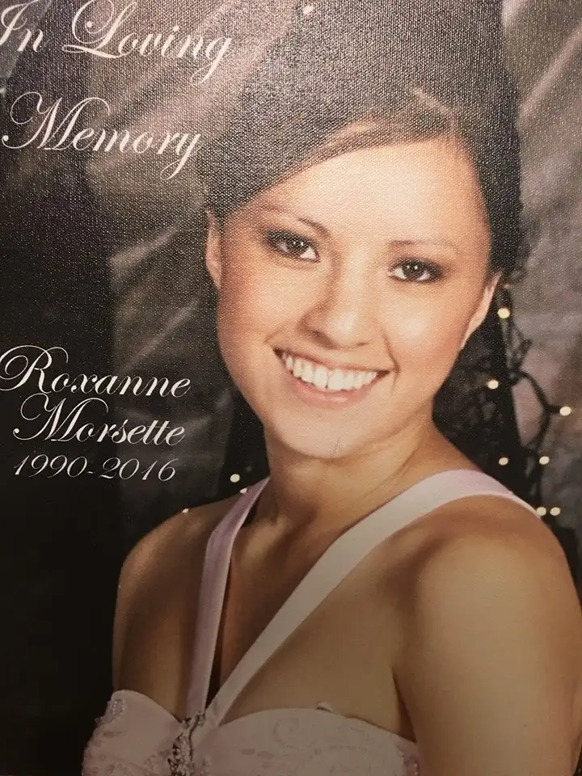

When my dear childhood friend Farrell named her daughter after me, I was far from the gravel roads, train tracks and river in northeast Montana where we used to play and dream.

Though I’d only met Roxy a couple of times, knowing she’d been named for me meant something special to me. It means something even more now.She was born in the warmth of spring, in May 1990, and died in the cold of winter, Jan. 2016, her life cut short by a man who sits in prison now for the crime that took her life.
This isn’t how it was supposed to go down. She was in her prime, with so much of her story yet to be written.
I couldn’t get back for the funeral, so when her mama mentioned a June 24 memorial to honor her sweet “Sannie,” I cleared the day, and made the six-hour journey with my mother to Mandaree, N.D.
Winding through the breathtaking Badlands of western North Dakota, then along a dusty road to the rural St. Anthony’s Church, we joined the others in the sanctuary, partaking in prayers and a feast of ribs, chicken, fry bread and traditional Native American soup.
As we ate, Roxy’s family started the giveaway, offering blankets to the living. When they called my name, I thought perhaps there’d been a mistake.
But, it seems, the connection of our names — and my long friendship with Roxy’s mother — had made me somehow worthy of this gift, so I accepted the rolled-up, lavender star quilt in humble gratitude.
Later, we visited her gravesite at Queen of Peace Cemetery, a small but remarkable burial ground in the country where Roxy had been laid to rest next to her older brother — his young death another of the family’s tragedies.
While tugging at weeds, Roxy’s stepdad noted that her body is still settling into the earth. I felt the lump in my throat. I hugged my friend. I paused to reflect on the harshness of it all.
Later, I unfolded the blanket to discover a most magnificent, colored star center with swirling thread patterns that spoke life to me.
I pondered the tradition of the giveaway — the Native American desire to give everything they have at a time when they are feeling most empty.
It’s something like what Jesus did in emptying himself for others in death.
And now, I have a blanket to keep me remembering Roxy at every glance and touch. In its warmth, she will bless me.
“It was not God’s will that this should happen,” I reminded her mama. “But it was God’s will that you would see Roxy again.”
I await that day, too. Until then, the quilt will keep me close. 
[For the sake of having a repository for my newspaper columns and articles, I reprint them here, with permission, a week after their run date. The preceding ran in The Forum newspaper on July 1, 2017.]